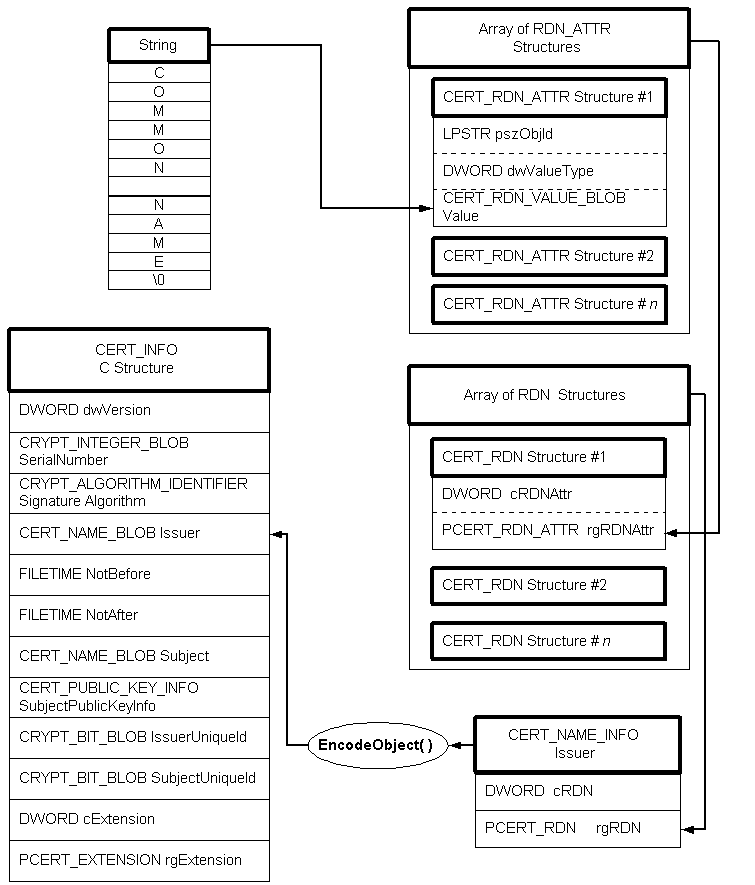
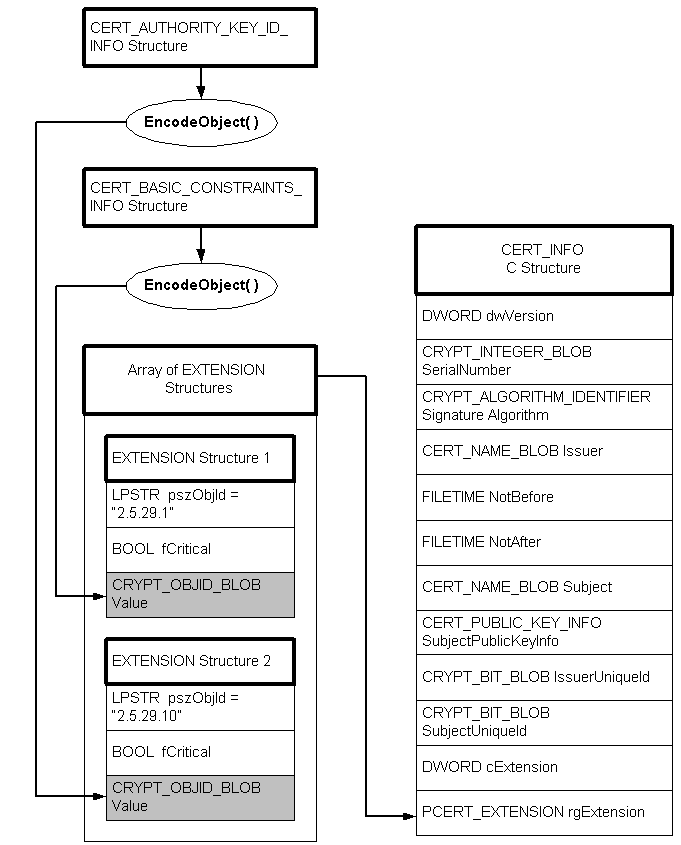

description: The encoding process is the reverse of the decoding process described in Decoding a CERT_INFO Structure.
ms.assetid: 5d3311e5-a2fb-46f7-aa76-f232b39b34fd
title: Encoding a CERT_INFO Structure
ms.topic: article
ms.date: 05/31/2018
Encoding a CERT_INFO Structure
The encoding process is the reverse of the decoding process described in Decoding a CERT_INFO Structure. For example, the following procedure would add an encoded Issuer to a CERT_INFO structure. Also see the illustration that follows the procedure.
To add an encoded Issuer to a CERT_INFO structure
- Create a string containing the issuer name to be used.
- Create an array of CERT_RDN_ATTR structures, which will be initialized to contain the proper information about the issuer name string just created.
- Create an array of CERT_RDN structures, one of which has the information about the array of CERT_RDN_ATTR structures just initialized.
- Create a CERT_NAME_INFO structure that has a pointer to the array of CERT_RDN structures that just created.
- Call CryptEncodeObject to get the size of the output encoded BLOB, passing it the address of the CERT_NAME_INFO structure that you just created.
- Allocate memory for the output encoded BLOB.
- Call CryptEncodeObject again, passing it the same information, but now passing it the address of the memory just allocated.
- Set the Issuer.cbData member of the CERT_INFO structure to the size returned in step 5, and the Issuer.pbData member to the address obtained in step 6. The encoded Issuer BLOB now resides there.

To initialize and encode some certificate extension information, use the following procedure. Also see the illustration that follows the procedure.
To add encoded extension information to a CERT_INFO structure
- Create and initialize an extension information structure—for this example, it is a CERT_BASIC_CONSTRAINTS_INFO structure.
- Call CryptEncodeObject, passing it the address of the structure just created, to get the size of the output encoded BLOB.
- Allocate memory for the output encoded BLOB.
- Call CryptEncodeObject again, passing the same information, except now pass in the address of the allocated memory.
- Create an array of CERT_EXTENSION structures.
- Initialize one of the CERT_EXTENSION structures so that the pszObjId is the proper string for the data contained in Value, and that Value contains the encrypted data BLOB that was output from the call to CryptEncodeObject.
- Initialize the rgExtension member of the CERT_INFO structure to point to the array of CERT_EXTENSION structures.

Â
Â